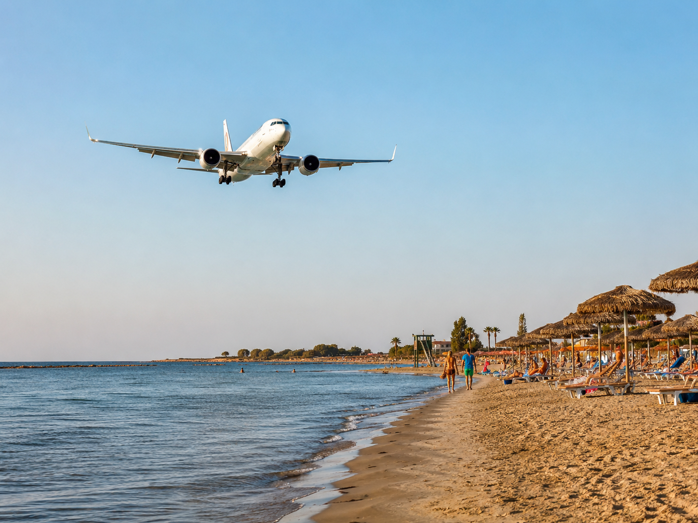
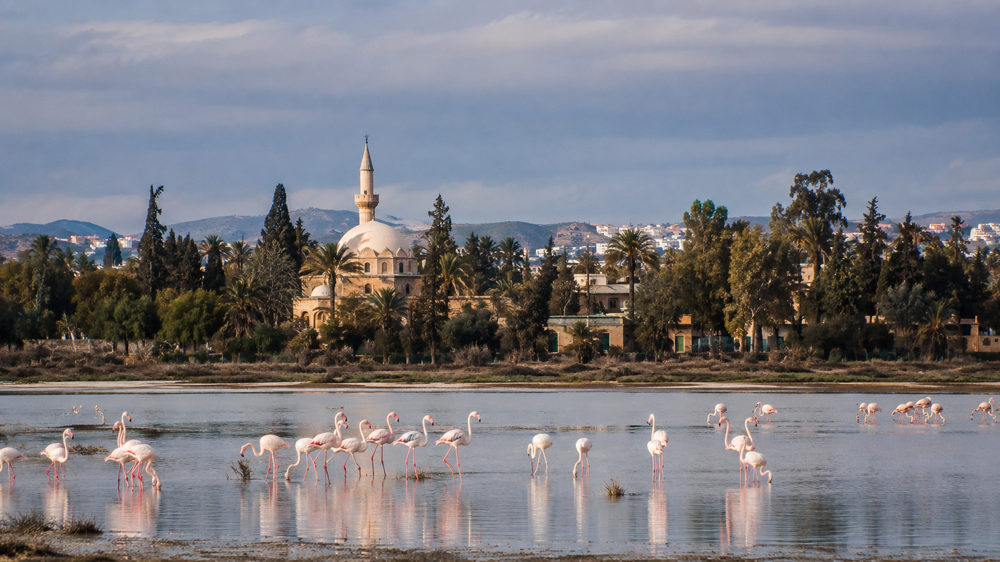
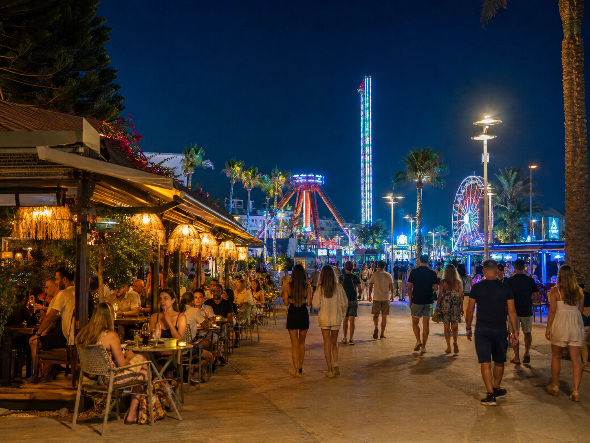
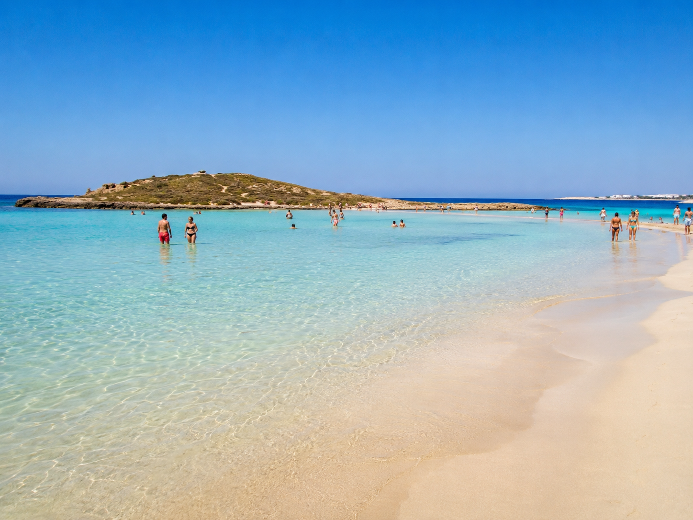
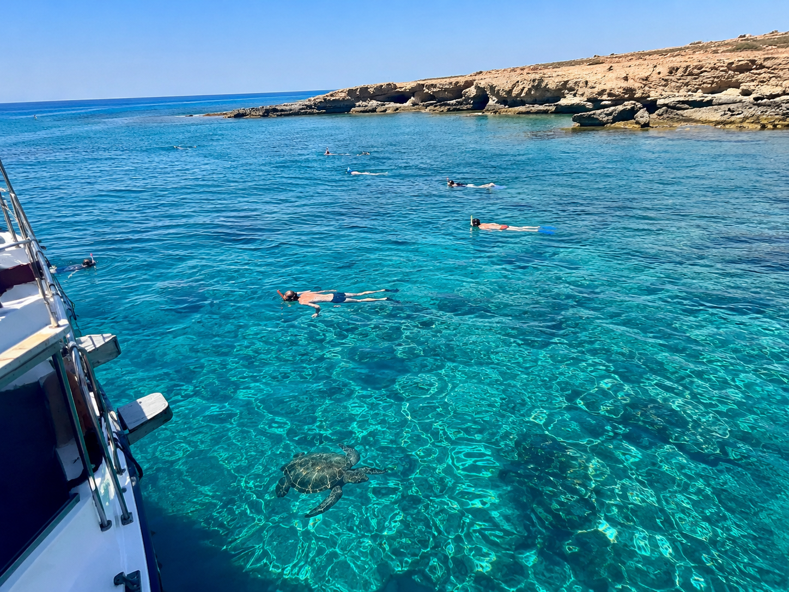
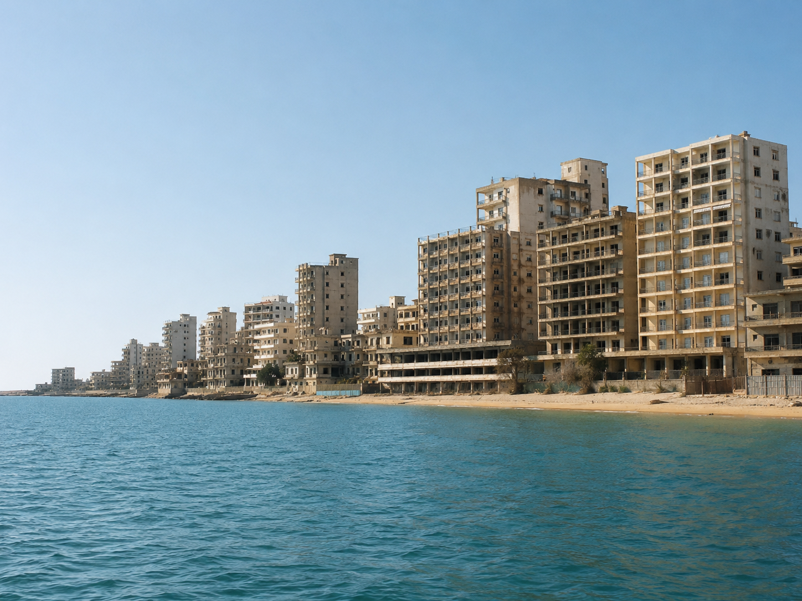
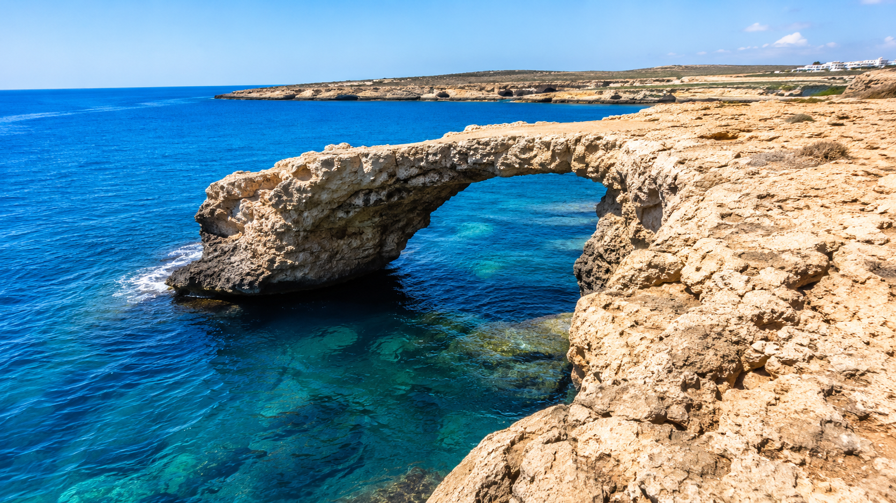
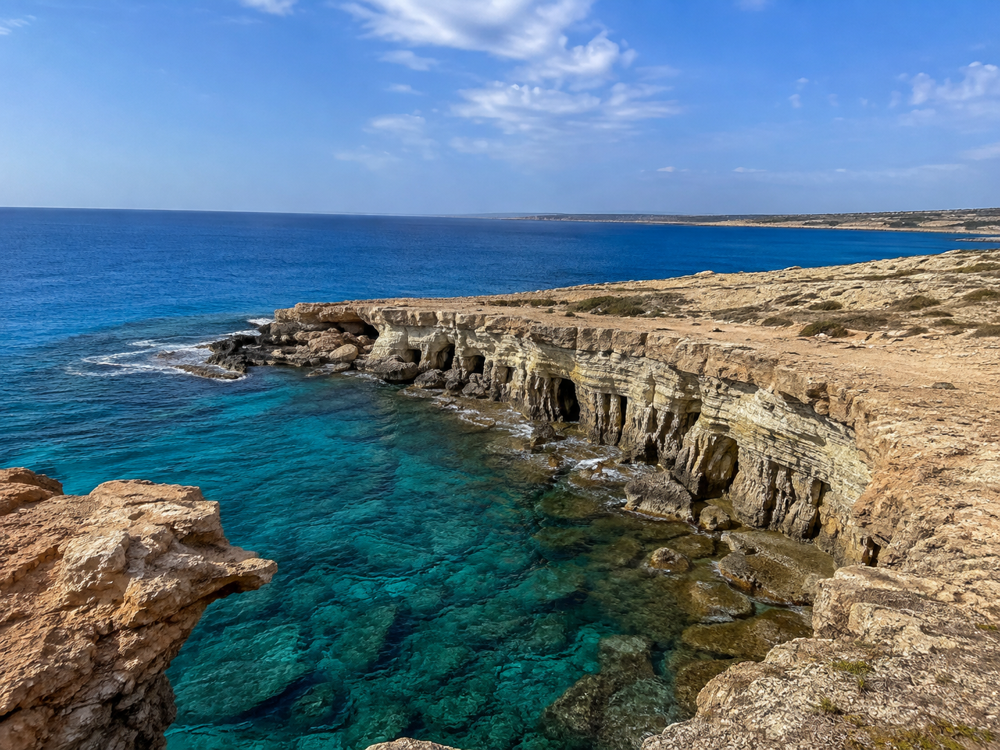
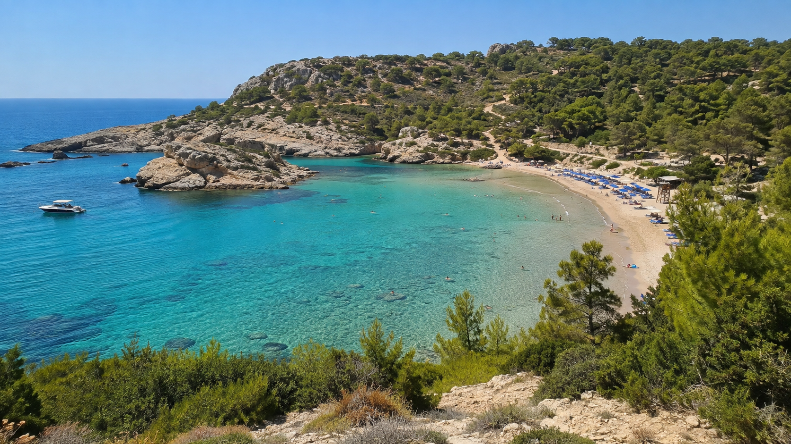
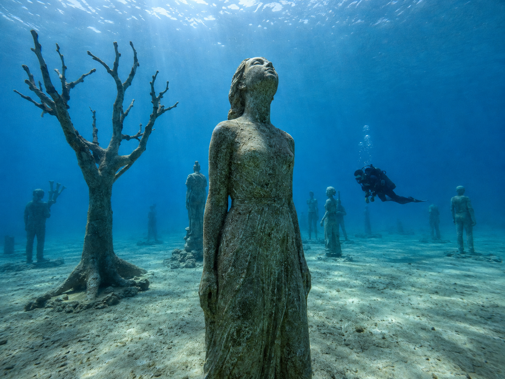

Na Cyprus sme prileteli z Košíc v septembri 2022. Čakali sme horúčavu, známe pláže a klasickú dovolenku s all inclusive. Najsilnejšiu spomienku sme si však nepriniesli z hotelového bazéna ani z Nissi Beach. Zostala ukrytá v jednej zátoke, kde sme si nasadili okuliare, ponorili hlavy pod hladinu a zrazu sme plávali vedľa morských korytnačiek.
Východný Cyprus dokáže počas jediného dňa ukázať niekoľko úplne odlišných tvárí. Ráno môžete stáť pod pristávajúcimi lietadlami v Larnake, popoludní kráčať plytkou vodou k ostrovčeku na Nissi Beach, neskôr objavovať morské jaskyne pri Cape Greco a večer počúvať hudbu z barov v Ayia Nape.
A potom sa loď priblíži k Varoši. K mestu, ktorého hotely sú stále viditeľné z mora, ale ich príbeh sa v roku 1974 náhle zastavil.
Práve tento kontrast robí cestu medzi Larnakou, Ayia Napou, Protarasom a Paralimni zaujímavejšou než obyčajnú dovolenku pri mori.
Prečo stojí východný Cyprus za pozornosť
Cyprus na nás pôsobil ako ostrov, na ktorom má slnko takmer trvalý pobyt. Nemusí byť vyhlásený za absolútne najslnečnejší ostrov Európskej únie, aby človek rýchlo pochopil jeho najväčšiu výhodu. Oficiálny turistický sprievodca uvádza približne 300 slnečných dní ročne a dlhé, suché leto trvajúce približne od polovice mája do polovice októbra.
V septembri bolo ešte poriadne horúco. Na kúpanie výborne, na dlhšie prechádzky cez deň už menej. Aj preto si dnes vieme Cyprus predstaviť v úplne inom období – počas sychravej jesene u nás alebo dokonca okolo Vianoc, keď by sa dal spoznávať bez letnej páľavy.
Východ ostrova je pritom kompaktný. Larnaka, Ayia Napa, Cape Greco, Protaras a Paralimni neležia stovky kilometrov od seba. Cestovateľ si preto môže vybrať živé letovisko, pokojnejšiu pláž, plavbu loďou, prírodný park alebo večernú prechádzku bez toho, aby potreboval zostavovať zložitú expedíciu.
Ako sa dostať na Cyprus zo Slovenska

My sme leteli priamo z Košíc do Larnaky. Aj v letnej sezóne 2026 je Larnaka dostupná z Košíc charterovými letmi a na vybrané termíny sa predávajú aj samostatné letenky Smartwings. Priame lety z Bratislavy prevádzkujú počas sezóny Wizz Air a Smartwings. Ponuka sa však mení podľa obdobia, preto treba vždy skontrolovať aktuálny letový poriadok alebo ponuku cestovných kancelárií.
Larnaka je prirodzenou vstupnou bránou na východ ostrova. Kto nechce zostať priamo v meste, môže odtiaľ pokračovať transferom, autobusom, taxíkom alebo prenajatým autom smerom do Ayia Napy a Protarasu.
Larnaka nie je iba letisko

Larnaku veľa dovolenkárov vníma iba cez okno autobusu cestou do hotela. Bola by však škoda prehliadnuť aspoň dve miesta, ktoré ukazujú úplne odlišné tváre mesta.
Prvým je Mckenzie Beach. Nejde o pláž s bielym pieskom ako na východe ostrova, no má inú atrakciu: leží pri letisku a je oficiálne odporúčaná aj na pozorovanie lietadiel. Stroje sa pri pristávaní objavujú nízko nad pobrežím, takže kúpanie môže pripomínať spojenie pláže s leteckou vyhliadkou. Voda je tu plytká a pokojná, pri pobreží fungujú reštaurácie, bary aj ďalšie služby.
Druhým miestom je Larnacké soľné jazero. Tu treba dobre zvoliť ročné obdobie. Počas horúceho leta môže byť jazero vyschnuté a návšteva nemusí priniesť to, čo človek očakáva z fotografií. Zmysel začína dávať po dažďoch, keď sa naplní vodou a prilietajú k nemu migrujúce vtáky. Plameniaky sa tu zvyčajne objavujú približne od novembra do marca. Okolo jazera vedie aj približne štvorkilometrový náučný chodník.
Larnaka má navyše promenádu Finikoudes, historické centrum, pobrežnú ulicu Piale Pasha a taverny pri rybárskom prístave. Na samostatnú dovolenku ponúka pokojnejšiu mestskú atmosféru, ale nás lákalo pokračovať ďalej – do Ayia Napy.
Ayia Napa: viac než hlučné letovisko

Ayia Napa bývala rybárskou dedinou. Dnes je známa plážami, hotelmi a nočným životom. Kto očakáva súbor bielych domčekov pripomínajúci grécke ostrovy, môže byť prekvapený. Mnohé hotely a apartmánové komplexy pôsobia skôr ako väčšie rezortné alebo bytové budovy.
To však neznamená, že mestu chýba atmosféra.
Bývali sme v hoteli pri mori s all inclusive, takže sme nepotrebovali každý večer hľadať inú reštauráciu. Stačilo sa vybrať do ulíc. Z taverien znela grécka hudba, z moderných barov úplne iný rytmus, inde sa spievalo karaoke. V centre fungovali kluby, bary aj Hard Rock Cafe a mesto bolo plné mladých ľudí, ktorí sa prišli zabaviť.
Večerná Ayia Napa však nemusí znamenať iba diskotéky. Jedným z našich príjemných zážitkov bola približne štvorkilometrová prechádzka z centra popri pobreží smerom k Nissi Beach. Naspäť sme sa vracali po hlavnej ceste pomedzi osvetlené hotely. Človek tak počas jedného večera zažije tichšie pobrežie aj hlučnejšiu tvár letoviska.
Oficiálne turistické zdroje potvrdzujú, že Ayia Napa spája rušné aj pokojnejšie pláže, prírodný park Cape Greco, stredoveký kláštor, rybársky prístav, múzeá, parky a jednu z najznámejších zón nočného života na ostrove.
Nissi Beach: pláž, na ktorú sme sa vracali

Od Nissi Beach sme bývali približne štyri kilometre. Pláž pri našom hoteli nebola zlá, ale Nissi bola jednoducho iná. Za týždeň sme sa na ňu autobusom vrátili približne tri- alebo štyrikrát.
Najväčším lákadlom nie je iba farba vody. Pred pobrežím leží malý ostrovček a pri vhodných podmienkach sa k nemu dá prejsť plytkou vodou. Niekde človeku siaha iba po kolená. Voda bola čistá takmer ako v bazéne a pokojné plytčiny boli vhodné aj na šnorchlovanie.
Počas našej septembrovej návštevy nebola pláž taká preplnená, ako býva uprostred leta, no stále tu bolo veľa mladých ľudí. Hrala hudba, fungoval bar, počas dňa sa konali zábavné programy a takmer každý sa fotografoval pri vode alebo na ostrovčeku.
Oficiálne je Nissi Beach známa práve kombináciou piesku, plytkej vody, hudby, barov a plážových podujatí. Malý ostrovček spojený s brehom pieskovým pásom patrí k symbolom oblasti.
Nissi však nemusí sadnúť každému. Kto chce ticho, môže skúsiť neďalekú Vathia Gonia, známu aj ako Sandy Bay. Pokojnejšou alternatívou môže byť Landa Beach, zatiaľ čo Makronissos ponúka niekoľko pieskových zátok a neďaleké staroveké skalné hrobky. Západnejšie leží Ayia Thekla, vhodná pre ľudí, ktorí chcú uniknúť z najrušnejšej časti letoviska.
A čistota vody nebola iba naším dovolenkovým dojmom. Podľa Európskej environmentálnej agentúry dosiahli v roku 2025 všetky hodnotené pobrežné vody na kúpanie na Cypre najvyššiu, teda výbornú klasifikáciu. Cyprus tak skutočne patrí medzi európsku špičku, hoci nie je potrebné označovať ho za jediného víťaza celého Stredomoria.
Plavba, na ktorej more menilo farbu

Najsilnejší zážitok z celej dovolenky prišiel počas výletu loďou z Ayia Napy smerom k pobrežiu Protarasu a Famagusty.
Z paluby sa ukázala časť Cypru, ktorú z cesty nevidno. Menšie zátoky, skalnaté pobrežie, útesy a pláže pri Protarase sa striedali tak rýchlo, až sa zdalo, že každá má vlastný odtieň modrej. Raz bola voda svetlá a priezračná, o chvíľu sýto tyrkysová a ďalej prechádzala do hlbokej modrej.
Loď zastavila v Modrej lagúne, kde sme si zaplávali. Najlepšia zastávka však prišla v zátoke s korytnačkami.
Na našej konkrétnej plavbe nešlo o náhodné zazretie panciera niekde v diaľke. Korytnačky sa pri lodi objavili a mohli sme vedľa nich plávať aj sa potápať. Posádka ich lákala šalátom, takže stretnutie bolo v praxi takmer isté.
Dnes je však dôležité dodať aj druhú stranu. Cyperské úrady upozorňujú, že morské korytnačky sa nemajú kŕmiť, dotýkať ani iným spôsobom vyrušovať či meniť ich prirodzené správanie. Oficiálne pravidlá kŕmenie priamo zakazujú. Pri výbere plavby by sme preto nehľadali spoločnosť, ktorá sľubuje korytnačky práve pomocou potravy, ale zodpovedného prevádzkovateľa, ktorý dodržiava odstup a nedovolí hosťom zvieratá chytať.
To nemení nič na tom, že plávanie vedľa korytnačky bolo naším najväčším zážitkom z Cypru. Práve naopak. Keď sa také zviera pohybuje vo svojom prostredí pár metrov od človeka, pochopíte, prečo ho treba pozorovať s rešpektom.
Varoša: výhľad na dovolenku, ktorá sa skončila zo dňa na deň

Počas plavby sme sa dostali aj smerom k Varoši. Z lode sú viditeľné siluety vysokých hotelov, ktoré pôsobia ako kulisy opusteného filmu. V skutočnosti ide o jeden z najbolestivejších symbolov rozdeleného Cypru.
Varoša bola prímorskou štvrťou Famagusty a pred rokom 1974 patrila medzi najznámejšie dovolenkové oblasti ostrova. V júli 1974 uskutočnila cyperská Národná garda pod vedením gréckych dôstojníkov prevrat proti prezidentovi Makariovi. Nasledovala turecká vojenská operácia a boje, po ktorých obyvatelia Varoše utiekli. Štvrť bola ohradená a desaťročia zostala opustená.
Bezpečnostná rada OSN v rezolúcii 550 z roku 1984 označila pokusy osídliť ktorúkoľvek časť Varoše ľuďmi inými než jej pôvodnými obyvateľmi za neprípustné. Od októbra 2020 boli niektoré časti ohradeného územia jednostranne sprístupnené návštevníkom. OSN tieto kroky odsúdila a opakovane vyzvala na ich zvrátenie.
A čo slovenskí vojaci?
Často sa zjednodušene hovorí, že Varošu alebo demilitarizovanú zónu strážia Slováci. Presnejšie je povedať, že slovenský kontingent v misii UNFICYP zodpovedá za sektor 4 nárazníkovej zóny OSN. Tento sektor sa tiahne približne 65 kilometrov až k Deryneii a jeho východná časť zahŕňa aj oblasť opustenej Varoše. Slovenskí vojaci tu hliadkujú, sledujú vojenskú aktivitu a pomáhajú udržiavať pokoj medzi líniami prímeria.
Misia UNFICYP patrí medzi najdlhšie pôsobiace mierové misie OSN a jej mandát bol v januári 2026 predĺžený do 31. januára 2027.
Varoša preto nie je iba fotogenické „mesto duchov“. Za prázdnymi hotelmi sú domovy, majetok a spomienky ľudí, ktorí odtiaľ museli odísť. Pohľad z lode trvá iba niekoľko minút, no príbeh miesta mení spôsob, akým človek vníma celý ostrov.
Love Bridge a pobrežie, ktoré sa dá objavovať pešo

Z Ayia Napy sa dá pešo dostať aj k známemu Love Bridge, prírodnému skalnému oblúku vystupujúcemu nad morom. My sme ho nemali ďaleko od hotela, a tak sa stal cieľom jednej z prechádzok.
Je to veľmi fotografované miesto, no oplatí sa nepozerať iba na samotný oblúk. Okolie už naznačuje, ako sa pieskové pobrežie Ayia Napy postupne mení na skalnatejší Cape Greco.
Neďaleko sa nachádza Sculpture Park, otvorený park so sochami od umelcov z rôznych krajín. Rozprestiera sa na svahu nad morom a spája umenie s panoramatickým výhľadom. Vstup sem dáva najväčší zmysel skoro ráno alebo podvečer, keď slnko nie je také ostré.
Cape Greco: jaskyne, útesy a skalné okná

Medzi Ayia Napou a Protarasom leží Cape Greco National Forest Park, najvýraznejšia prírodná časť východného pobrežia.
Čakajú tu morské jaskyne, skalné oblúky, malé zátoky, borovicové porasty, vyhliadky a chodníky smerujúce k pobrežiu. Medzi známe miesta patrí kaplnka Agioi Anargyroi, prírodný most Kamara tou Koraka, Modrá lagúna, jaskyne pri pobreží a zátoka Konnos Bay. Oficiálne turistické zdroje zaraďujú jaskyne, Love Bridge, Cape Greco aj Konnos medzi hlavné prírodné miesta oblasti.
Pri morských jaskyniach skáču niektorí ľudia z útesov priamo do vody. Vyzerá to pôsobivo, ale nepovažovali by sme to automaticky za odporúčanie. Hĺbka, prúdy, vlny aj možnosti výstupu z vody sa môžu meniť. To, že skočil človek pred vami, ešte neznamená, že je miesto bezpečné.
Fotograficky najzaujímavejšie sú skalné otvory a prirodzené „okná“ smerujúce k moru. Na sociálnych sieťach sa objavujú zábery ľudí v dlhých šatách stojacich v ráme skaly, no pri návšteve sa oplatí myslieť aj na pevnú obuv a bezpečný odstup od hrany. V silnom vetre alebo na rozpálenej skale sa romantická fotografia môže rýchlo zmeniť na nepríjemný zážitok.
Najlepší čas na dlhšiu prechádzku je mimo poludňajšej horúčavy. V septembri bolo kúpanie výborné, no na túru by sme si radšej vybrali skoré ráno, podvečer alebo chladnejšie obdobie.
Konnos Bay a pobrežie Protarasu

Konnos Bay leží medzi Cape Greco a Protarasom. Je menšia než Nissi Beach, obklopená svahmi a zelenšia. Oficiálny turistický portál ju označuje za jednu z najmalebnejších zátok ostrova.
Ďalej sa pobrežie otvára smerom k Protarasu. Práve pláže v jeho okolí na nás z lode zapôsobili ako tisíc odtieňov modrej. Najznámejšia je Fig Tree Bay, ale oplatí sa pozerať aj na menšie zátoky, pobrežnú promenádu a miesta vhodné na šnorchlovanie.
Protaras pôsobí rodinnejšie a pokojnejšie než centrum Ayia Napy. Neznamená to, že je úplne tichý, ale večerná atmosféra je menej postavená na kluboch. Nad letoviskom stojí kostolík Profitis Elias, ku ktorému vedú schody a odkiaľ sa otvára výhľad na pobrežie.
Do samotného mesta Paralimni sme sa počas tejto cesty nedostali. Je však správnym doplnením článku, pretože Protaras administratívne patrí do jeho oblasti a mesto ukazuje civilnejšiu tvár regiónu. Namiesto plážových barov tu možno nájsť hlavné námestie, miestne obchody, kaviarne a život, ktorý nie je vytvorený iba pre dovolenkárov.
Umenie pod hladinou: MUSAN

Ayia Napa má atrakciu, ktorú z bežnej pobrežnej prechádzky neuvidíte. Približne 200 metrov od brehu sa pod vodou nachádza MUSAN – Museum of Underwater Sculpture Ayia Napa.
Pod hladinou stojí viac než 90 diel vytvorených z materiálov určených pre morské prostredie. Sochy ľudí a stromov vytvárajú podvodný les, ktorý sa postupne mení, keď ho osídľuje morský život. Inštalácia je navrhnutá pre potápačov a podľa hĺbky aj pre šnorchlistov.
Pri MUSAN sme sa nepotápali, iba sme vedeli, že sa pri pobreží nachádza. Pre človeka, ktorý chce viac než klasické šnorchlovanie pri skale, však môže ísť o jeden z najoriginálnejších zážitkov v oblasti.
Aquapark, lunapark a ľudia vystrelení nad mesto
Ayia Napa myslí aj na rodiny a ľudí, ktorým nestačí ležadlo pri mori.
Na západnom okraji letoviska sa nachádza WaterWorld, veľký aquapark tematicky inšpirovaný antickou gréckou mytológiou. Tobogany, bazény a výzdoba nesú názvy a motívy spojené s gréckymi bohmi a legendami.
V centre funguje Parko Paliatso, najväčší lunapark na Cypre. Jeho najviditeľnejšou atrakciou je Sling Shot – sedadlo pre dvojicu pripevnené na pružných lanách, ktoré ľudí vystrelí vysoko nad mesto.
Z nášho hotela bolo vidieť, ako dvojice vyleteli hore, na okamih sa zastavili nad svetlami Ayia Napy a potom znovu padali dole. Atrakciu bolo možné pozorovať z rôznych častí mesta, pretože konštrukcia aj pohyb sedadla sú výrazné. Záujemcovia si podľa aktuálnej ponuky môžu odniesť aj záznam svojej jazdy, cenu však treba preveriť priamo na mieste. Park má viac než 25 atrakcií a veľké vyhliadkové koleso.
Cyprus bez požičaného auta
Auto sme si nepožičali – a pri pobyte zameranom na Ayia Napu, pláže a plavbu nám výrazne nechýbalo.
Na Nissi Beach sme cestovali miestnym autobusom. V roku 2022 stála jedna cesta približne 1,50 eura. Autobusy premávali často od skorého rána do neskorého večera, takže sme sa mohli na pláž opakovane vracať bez taxíka.
V roku 2026 stojí bežný denný jednorazový lístok v sieti OSEA dve eurá, nočný tri eurá a jednodňový lístok šesť eur. Trasy prepájajú Paralimni, Protaras, Konnos, Ayia Napu a ďalšie miesta regiónu; existuje aj spojenie smerom do Larnaky. Cestovné poriadky a ceny sa môžu meniť podľa sezóny.
Auto má napriek tomu zmysel pre človeka, ktorý chce navštíviť viac vyhliadok, vnútrozemské dediny alebo vzdialenejšie časti ostrova. Treba však pamätať, že na Cypre sa jazdí vľavo.
Prenajaté autá majú často červené evidenčné tabuľky a ich označenie sa tradične začína písmenom Z. Vďaka tomu ostatní vodiči okamžite vidia, že môže ísť o návštevníka. Nedá sa zaručiť, že každý domáci vodič bude automaticky ohľaduplnejší, ale pre turistu je príjemné vedieť, že jeho neistota pri jazde vľavo nie je úplne neviditeľná.
V letovisku sa dajú požičať aj buginy, štvorkolky a skútre. Pri nich by sme si dôkladne skontrolovali poistenie, prilbu, stav vozidla a územie, na ktorom sa môže používať.
Praktický hotelový detail, ktorý v katalógu nenájdete
Hotel nie je hlavnou témou tohto článku, pretože každý cestovateľ si zvolí iný rozpočet, stravu aj úroveň služieb. Jedna drobnosť však môže ovplyvniť celý pobyt.
Ak dostanete izbu na najvyššom poschodí, pozrite sa alebo sa opýtajte, čo sa nachádza na streche.
V našom prípade tam bola poriadne hlučná klimatizačná technológia. Cez deň ju človek prehliadne, ale v tichu noci dokáže pravidelný hukot pokaziť spánok. Pri príchode si preto na chvíľu vypnite klimatizáciu v izbe a započúvajte sa, či hluk neprichádza zvonka alebo zo strechy.
Ak je problém výrazný, riešte výmenu izby čo najskôr, nie až v polovici dovolenky. 😉
Čo ochutnať, aj keď máte all inclusive
Pri all inclusive sme miestnu gastronómiu cielene neobjavovali. Ochutnali sme, samozrejme, halloumi, známy cyperský syr vhodný aj na grilovanie.
Kto chce ísť ďalej než k hotelovému bufetu, môže skúsiť cyperské meze – väčší výber menších jedál, ktoré prichádzajú postupne na stôl. Objavuje sa medzi nimi halloumi, olivy, nátierky, zelenina, klobásky, mäso alebo ryby podľa typu podniku.
Typická je aj lountza, údené bravčové mäso často podávané s halloumi, či pomaly pripravované mäso kleftiko. Z nápojov je s ostrovom spojená Commandaria, sladké víno s veľmi dlhou tradíciou.
Najlepšiu atmosféru by sme nehľadali v podniku s najväčšou fotografiou jedla na ulici, ale v menšej taverne, kde sedia aj domáci. Halloumi je oficiálne chráneným a charakteristickým výrobkom Cypru.
Prečo by sme sa vrátili mimo leta
Na Cyprus by sme sa vrátili. Možno však nie znovu v najhorúcejšom období.
September bol skvelý na more. Voda bola teplá, dni slnečné a letná atmosféra stále fungovala. Na dlhé prechádzky, Cape Greco a objavovanie miest však môže byť príjemnejšia neskorá jeseň, zima alebo skorá jar.
Oficiálne klimatické údaje uvádzajú pre december priemernú dennú teplotu približne 19 °C a priemernú teplotu mora okolo 19 až 21 °C podľa použitého obdobia a metodiky. V decembri a januári má Cyprus priemerne približne päť až šesť hodín jasného slnečného svitu denne. Nie je to záruka letného počasia ani teplého kúpania každý deň, ale v porovnaní so strednou Európou môže ísť o príjemný únik za svetlom, prechádzkami a výletmi.
V zime sa navyše naplní soľné jazero pri Larnake, priletia plameniaky a skalnaté chodníky pri Cape Greco sa dajú prechádzať bez septembrovej páľavy.
Čo si vyberú rôzne typy cestovateľov
Milovník pláží si pravdepodobne nenechá ujsť Nissi Beach, Makronissos, Konnos Bay a Fig Tree Bay.
Milovník prírody môže objavovať Cape Greco, morské jaskyne, prírodné mosty, pobrežné chodníky a zimné soľné jazero.
Záujemca o históriu nájde kláštor v Ayia Nape, hrobky pri Makronissose a predovšetkým silný príbeh Famagusty a Varoše.
Návštevník miest a letovísk môže porovnať mestskú Larnaku, živú Ayia Napu, rodinnejší Protaras a civilnejšie Paralimni.
Milovník jedla môže opustiť hotelový bufet a skúsiť meze, halloumi, lountzu, kleftiko alebo Commandariu.
Rodina s deťmi ocení plytké pláže, WaterWorld, lunapark, vyhliadkové koleso a Ocean Aquarium pri Protarase.
Človek hľadajúci pokoj by sa mal vyhnúť centru nočného života a najrušnejším častiam Nissi Beach. Viac mu môžu vyhovovať Ayia Thekla, Konnos, menšie zátoky alebo mimosezónny pobyt.
Aktívny cestovateľ môže kombinovať pešiu turistiku, šnorchlovanie, potápanie pri MUSAN, plavby, vodné športy a výlety po ostrove.
Úprimný záver
Východný Cyprus nie je ukážkou romantických gréckych dediniek ani nedotknutým ostrovom bez veľkých hotelov. Je to rozvinutá dovolenková oblasť s rezortmi, barmi, hudbou a miestami, ktoré môžu byť počas hlavnej sezóny veľmi rušné.
Jeho najväčšia sila sa však nachádza medzi nimi.
V plytkej vode pri Nissi Beach. V zátoke, kde sa vedľa človeka objaví korytnačka. V skalnom okne pri morských jaskyniach. V tichom pohľade z lode na hotely vo Varoši. V obyčajnej večernej prechádzke popri pobreží, keď za chrbtom hrá hudba z Ayia Napy a pred vami zostáva iba tmavé more.
Najväčšia škoda by bola zostať celý týždeň iba pri hotelovom bazéne.
Pretože medzi Larnakou a Paralimni sa Cyprus neukazuje naraz. Odhaľuje sa postupne – v tisícoch odtieňov modrej, v príbehoch rozdeleného ostrova a v lete, ktoré sa tu končí oveľa neskôr než u nás.
Použité zdroje
- Oficiálny turistický portál Cypru – podnebie, doprava, pláže, Ayia Napa, Cape Greco, soľné jazero a MUSAN.
- Visit Famagusta – atrakcie Ayia Napy a Protarasu, Sculpture Park, WaterWorld, Parko Paliatso a MUSAN.
- Larnaka Tourism Board – Mckenzie Beach, pozorovanie lietadiel a pobrežie Larnaky.
- OSEA – cestovné poriadky a ceny autobusov v roku 2026.
- UNFICYP a Bezpečnostná rada OSN – udalosti z roku 1974, Varoša, nárazníková zóna a súčasný mandát misie.
- UNFICYP a Ministerstvo obrany SR – slovenský kontingent v sektore 4 vrátane oblasti Varoše.
- Cyperské ministerstvo poľnohospodárstva a životného prostredia – ochrana morských korytnačiek a zákaz ich kŕmenia.
- Európska environmentálna agentúra – kvalita vody na kúpanie na Cypre za rok 2025.
- Letisko Bratislava a Letisko Košice – spojenia s Larnakou počas letnej sezóny 2026.